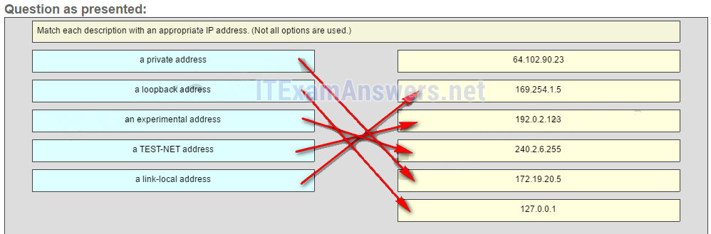

1.¿Cuántos bits hay en una dirección IPv4?
- 32 *
- 64
- 128
- 256
- @javi__super
Explicación:
una dirección IPv4 consta de 4 octetos de dígitos binarios, cada uno con 8 bits, lo que da como resultado una dirección de 32 bits.
2.¿Qué dos partes son componentes de una dirección IPv4? (Escoge dos.)
- porción de red *
- porción de subred
- parte del host *
- parte lógica
- @javi__super
Explicación:
una dirección IPv4 se divide en dos partes: una parte de la red: para identificar la red específica en la que reside el host y una parte del host, para identificar los hosts específicos de una red. Se utiliza una máscara de subred para identificar la longitud de cada parte.
3.¿Qué representa la dirección IP 172.17.4.250/24?
- Dirección del servidor *
- dirección de red
- dirección de multidifusión
- dirección de Difusión
- @javi__super
Explique:
El / 24 muestra que la dirección de red es 172.17.4.0. La dirección de transmisión para esta red sería 172.17.4.255. Las direcciones de host utilizables para esta red son 172.17.4.1 hasta 172.17.4.254.
4.¿Cuál es el propósito de la máscara de subred junto con una dirección IP?
- para determinar la subred a la que pertenece el host *
- para identificar de forma única un host en una red
- para identificar si la dirección es pública o privada
- para enmascarar la dirección IP a los forasteros
- @javi__super
Explique:
con la dirección IPv4, también es necesaria una máscara de subred. Una máscara de subred es un tipo especial de dirección IPv4 que junto con la dirección IP determina la subred de la que el dispositivo es miembro. Al aire libre
5.¿Qué máscara de subred está representada por la notación de barra / 20?
- 255.255.240.0 *
- 255.255.255.248
- 255.255.224.0
- 255.255.255.0
- @javi__super
Explique:
La notación de barra / 20 representa una máscara de subred con 20 1s. Esto se traduciría a: 11111111.11111111.11110000.0000, que a su vez se convertiría en 255.255.240.0.
6.Se envía un mensaje a todos los hosts en una red remota. ¿Qué tipo de mensaje es?
- transmisión dirigida *
- emisión limitada
- multicast
- unicast
- @javi__super
Explique:
una transmisión dirigida es un mensaje que se envía a todos los hosts en una red específica. Es útil para enviar una transmisión a todos los hosts en una red no local. Un mensaje de multidifusión es un mensaje enviado a un grupo seleccionado de hosts que forman parte de un grupo de multidifusión suscrito. Se utiliza una difusión limitada para una comunicación que está limitada a los hosts en la red local. Un mensaje de unidifusión es un mensaje enviado de un host a otro.
7.¿Cuáles son las tres características de la transmisión multicast? (Elige tres.)
- Se puede enviar un solo paquete a un grupo de hosts. *
- La dirección de origen de una transmisión de multidifusión está en el rango de 224.0.0.0 a 224.0.0.255.
- Los enrutadores pueden utilizar la transmisión de multidifusión para intercambiar información de enrutamiento. *
- El rango de 224.0.0.0 a 224.0.0.255 está reservado para llegar a grupos de multidifusión en una red local. *
- @javi__super
Explicación:
los
mensajes de difusión consisten en paquetes individuales que se envían a todos los hosts en un segmento de red. Estos tipos de mensajes se utilizan para solicitar direcciones IPv4 y asignar direcciones de capa superior a direcciones de capa inferior. Una transmisión de multidifusión es un paquete único que se envía a un grupo de hosts y es utilizado por los protocolos de enrutamiento, como OSPF y RIPv2, para intercambiar rutas. El rango de direcciones 224.0.0.0 a 224.0.0.255 está reservado para que las direcciones de enlace local lleguen a grupos de multidifusión en una red local.
8.¿Qué tres direcciones IP son privadas? (Elige tres.)
- 10.1.1.1 *
- 172.32.5.2
- 192.168.5.5 *
- 172.16.4.4 *
- @javi__super
Explique:
Las direcciones IP privadas están dentro de estos tres rangos:
10.0.0.0 - 10.255.255.255
172.16.0.0 - 172.31.255.255
192.168.0.0 - 192.168.255.255
9.¿Qué dos técnicas de transición de IPv4 a IPv6 gestionan la interconexión de los dominios de IPv6? (Escoge dos.)
- doble pila *
- trunking
- tunelización *
- multiplexación
- @javi__super
Explique:
existen tres técnicas para permitir que IPv4 e IPv6 coexistan en una red. La pila dual permite que IPv4 e IPv6 coexistan en el mismo segmento de red. Los dispositivos de doble pila ejecutan las pilas de protocolos IPv4 e IPv6 simultáneamente. La tunelización es un método para transportar un paquete IPv6 a través de una red IPv4. El paquete IPv6 está encapsulado dentro de un paquete IPv4, similar a otros tipos de datos. La traducción de direcciones de red 64 (NAT64) permite que los dispositivos habilitados para IPv6 se comuniquen con los dispositivos habilitados para IPv4 utilizando una técnica de traducción similar a la NAT para IPv4
10.¿Cuál de estas direcciones es la abreviatura más corta para la dirección IP:
3FFE: 1044: 0000: 0000: 00AB: 0000: 0000: 0057?
- 3FFE: 1044: 0: 0: 00AB :: 0057 *
- 3FFE: 1044 :: AB :: 57
- 3FFE: 1044 :: 00AB :: 0057
- 3FFE: 1044: 0: 0: 00AB :: 0057
- @javi__super
11.¿Qué tipo de dirección se asigna automáticamente a una interfaz cuando IPv6 está habilitado en esa interfaz?
- enlace local *
- unicast global
- bucle de retorno
- local único
- @javi__super
Explicación:
cuando IPv6 está habilitado en cualquier interfaz, esa interfaz generará automáticamente una dirección de enlace local de IPv6.
12.¿Cuáles son dos tipos de direcciones de unidifusión IPv6? (Escoge dos.)
- loopback *
- multicast
- enlace local *
- Anycast
- @javi__super
Explicación:
los
tipos de direcciones IPv6 son multicast, anycast y unicast. No hay una dirección de transmisión en IPv6. Loopback y link-local son tipos específicos de direcciones unicast.
13.¿Cuáles son las tres partes de una dirección de unidifusión global IPv6? (Elige tres.)
- un prefijo de enrutamiento global que se utiliza para identificar la parte de la red de la dirección que ha proporcionado un ISP *
- un ID de interfaz que se utiliza para identificar la red local para un host en particular
- una ID de subred que se usa para identificar redes dentro del sitio de la empresa local *
- un prefijo de enrutamiento global que se utiliza para identificar la parte de la dirección de red proporcionada por un administrador local
- una ID de interfaz que se utiliza para identificar el host local en la red *
Explique:
hay tres elementos que conforman una dirección de unidifusión global IPv6. Un prefijo de enrutamiento global proporcionado por un ISP, una ID de subred determinada por la organización y una ID de interfaz que identifica de forma única la interfaz de interfaz de un host.
14.Un administrador desea configurar los hosts para que se asignen automáticamente direcciones IPv6 mediante el uso de mensajes de anuncio de enrutador, pero también para obtener la dirección del servidor DNS de un servidor DHCPv6. ¿Qué método de asignación de direcciones debe configurarse?
- DHCPv6 sin estado *
- SLAAC
- DHCPv6 con estado
- RA y EUI-64
- @javi__super
Explicación:
DHCPv6 sin estado permite que los clientes utilicen mensajes de anuncio de enrutador (RA) ICMPv6 para que se asignen automáticamente direcciones IPv6, pero luego les permite ponerse en contacto con un servidor DHCPv6 para obtener información adicional, como el nombre de dominio y la dirección de los servidores DNS. SLAAC no permite que el cliente obtenga información adicional a través de DHCPv6, y DHCPv6 con estado requiere que el cliente reciba su dirección de interfaz directamente desde un servidor DHCPv6. Los mensajes de RA, cuando se combinan con un identificador de interfaz EUI-64, se usan para crear automáticamente una dirección IPv6 de interfaz, y son parte de SLAAC y DHCPv6 sin estado.
15.¿Qué protocolo admite la configuración automática de direcciones sin estado (SLAAC) para la asignación dinámica de direcciones IPv6 a un host?
- ICMPv6 *
- ARPv6
- DHCPv6
- UDP
- @javi__super
Explique:
SLAAC usa mensajes ICMPv6 cuando asigna dinámicamente una dirección IPv6 a un host. DHCPv6 es un método alternativo para asignar direcciones IPv6 a un host. ARPv6 no existe. El Protocolo de descubrimiento de vecinos (NDP) proporciona la funcionalidad de ARP para redes IPv6. UDP es el protocolo de capa de transporte utilizado por DHCPv6.
16.¿Qué dos cosas se pueden determinar usando el comando ping? (Escoge dos.)
- el tiempo promedio que toma un paquete para llegar al destino y para que la respuesta regrese a la fuente *
- El número de enrutadores entre el dispositivo de origen y el de destino.
- La dirección IP del enrutador más cercano al dispositivo de destino.
- el dispositivo de destino es accesible a través de la red *
- @javi__super
17.¿Cuál es el propósito de los mensajes ICMP?
- para proporcionar retroalimentación de las transmisiones de paquetes IP *
- Para informar a los enrutadores sobre los cambios en la topología de la red.
- para garantizar la entrega de un paquete IP
- Para supervisar el proceso de un nombre de dominio para la resolución de la dirección IP
- @javi__super
Explique:
el propósito de los mensajes ICMP es proporcionar comentarios sobre problemas relacionados con el procesamiento de paquetes IP.
18.¿Qué se indica con un ping exitoso a la dirección :: 1 IPv6?
- La IP está correctamente instalada en el host. *
- El host está cableado correctamente.
- La dirección de la puerta de enlace predeterminada está configurada correctamente.
- La dirección de enlace local está configurada correctamente.
- @javi__super
Explique:
La dirección IPv6 :: 1 es la dirección de bucle de retorno. Un ping exitoso a esta dirección significa que la pila TCP / IP está instalada correctamente. No significa que las direcciones estén configuradas correctamente.
19.Un usuario está ejecutando un tracert a un dispositivo remoto. ¿En qué momento sería un router, que se encuentra en la ruta de acceso al dispositivo de destino, deje de enviar el paquete?
- cuando el valor en el campo TTL llega a cero *
- cuando el enrutador recibe un mensaje ICMP Time Exceeded
- cuando el valor de RTT llega a cero
- cuando el host responde con un mensaje de ICMP Echo Reply
- @javi__super
Explique:
cuando un enrutador recibe un paquete traceroute, el valor en el campo TTL disminuye en 1. Cuando el valor en el campo llega a cero, el enrutador receptor no reenviará el paquete y enviará un mensaje ICMP Time Exceeded de regreso al fuente.
20.¿Cuál es el equivalente binario del número decimal 232?
- 11101000 *
- 11110010
- 10011000
- 11000110
- @javi__super
21.¿Cuál es el equivalente decimal del número binario 10010101?
- 149 *
- 157
- 168
- 5
- @javi__super
22.¿Qué contenido de campo utiliza ICMPv6 para determinar que un paquete ha caducado?
- Campo de límite de salto *
- Tiempo superado en el campo
- Campo CRC
- Tiempo superado en el campo
- @javi__super
Explicación:
ICMPv6 envía un mensaje de tiempo excedido si el enrutador no puede reenviar un paquete de IPv6 porque el paquete expiró. El enrutador utiliza un campo de límite de salto para determinar si el paquete ha caducado y no tiene un campo TTL.
23.Rellena el espacio en blanco.
- El equivalente decimal del número binario 10010101 149 *.
- @javi__super
Explicación:
para convertir un número binario al equivalente decimal, agregue el valor de la posición donde esté presente cualquier binario 1.
24.Rellena el espacio en blanco.
- El equivalente binario del número decimal 232 es 11101000. *
- @javi__super
Explicación:
para convertir un número decimal a binario, primero determine si el número decimal es igual o mayor que 128. En este caso, debido a que 232 es mayor que 128, se coloca un 1 en la posición del bit para el valor decimal 128 y el valor de 128 se resta de 232. Esto da como resultado el valor de 104. Luego comparamos este valor con 64. Como 104 es mayor que 64, se coloca un 1 en la posición del bit para el valor decimal 64 y el valor de 64 es restado de 104. El valor restante es entonces 40. El proceso debe continuar para todas las posiciones de bit restantes.
25.Rellena el espacio en blanco.¿Cuál es el equivalente decimal del número hexadecimal 0x3F?
- 63 *
- 3
- 54
- 21
- @javi__super
Explicar:
para convertir de hexadecimal a decimal, multiplique cada dígito por el valor de posición que está asociado con la posición del dígito y agregue los resultados.
26.Haga coincidir cada descripción con una dirección IP apropiada. (No se utilizan todas las opciones).
Pregunta Respuesta
- Respuesta
- Respuesta

- @javi__super
Explicación:
las direcciones de enlace local son asignadas automáticamente por el entorno del sistema operativo y están ubicadas en el bloque 169.254.0.0/16. Los rangos de direcciones privadas son 10.0.0.0/8, 172.16.0.0/12 y 192.168.0.0/16. Las direcciones TEST-NET pertenecen al rango 192.0.2.0/24. Las direcciones en el bloque 240.0.0.0 a 255.255.255.254 están reservadas como direcciones experimentales. Las direcciones de loopback pertenecen al bloque 127.0.0.0/8.
27.¿Qué es un socket?
- la combinación de una dirección IP de origen y un número de puerto o una dirección IP de destino y un número de puerto *
- la combinación de la dirección IP de origen y destino y la dirección Ethernet de origen y destino
- La combinación de la secuencia de origen y destino y los números de acuse de recibo.
- la combinación de los números de secuencia de origen y destino y los números de puerto
- @javi__super
28.Un dispositivo host debe enviar un archivo de video grande a través de la red mientras proporciona comunicación de datos a otros usuarios. ¿Qué característica permitirá que se produzcan diferentes flujos de comunicación al mismo tiempo, sin tener un solo flujo de datos utilizando todo el ancho de banda disponible?
- multiplexación *
- tamaño de ventana
- números de puerto
- expresiones de gratitud
- @javi__super
29.Un dispositivo host envía un paquete de datos a un servidor web a través del protocolo HTTP. ¿Qué utiliza la capa de transporte para pasar el flujo de datos a la aplicación adecuada en el servidor?
- número de puerto de destino *
- secuencia de números
- reconocimiento
- número de puerto de origen
- @javi__super
30.¿Cuál es una característica beneficiosa del protocolo de transporte UDP?
- Menos retrasos en la transmisión *
- seguimiento de segmentos de datos utilizando números de secuencia
- acuse de recibo de los datos recibidos
- la capacidad de retransmitir datos perdidos
- @javi__super
31.¿Qué escenario describe una función proporcionada por la capa de transporte?
- Un estudiante tiene dos ventanas de navegador web abiertas para acceder a dos sitios web. La capa de transporte garantiza que la página web correcta se envíe a la ventana del navegador correcta. *
- Un estudiante está usando un teléfono VoIP en el aula para llamar a casa. El identificador único grabado en el teléfono es una dirección de capa de transporte que se usa para contactar a otro dispositivo de red en la misma red.
- Un estudiante está jugando una película corta basada en la web con sonido. La película y el sonido están codificados dentro del encabezado de la capa de transporte.
- @javi__super
32.¿Cuál es el rango completo de puertos TCP y UDP conocidos?
- 0 a 1023 *
- 0 a 255
- 256 - 1023
- 1024 - 49151
- @javi__super
33.¿Qué selecciona una aplicación cliente para un número de puerto de origen TCP o UDP?
- un valor aleatorio en el rango de los puertos registrados *
- Un valor aleatorio en el conocido rango de puertos.
- Un valor predefinido en el conocido rango de puertos.
- Un valor predefinido en el rango de los puertos registrados.
- @javi__super
34.En comparación con UDP, ¿qué factor causa una sobrecarga de red adicional para la comunicación TCP?
- Tráfico de red causado por retransmisiones *
- La identificación de aplicaciones basadas en números de puerto de destino.
- La encapsulación en paquetes IP.
- la detección de errores de suma de comprobación
- @javi__super
35.¿Qué función de capa de transporte se utiliza para garantizar el establecimiento de la sesión?
- TCP apretón de manos de 3 vías *
- Número de secuencia UDP
- Bandera UDP ACK
- Número de puerto TCP
- @javi__super
36.¿Qué dos indicadores en el encabezado TCP se utilizan en un protocolo de enlace de tres vías TCP para establecer la conectividad entre dos dispositivos de red? (Escoge dos.)
- ACK *
- SYN *
- PSH
- Urgir
- @javi__super
37.¿Qué factor determina el tamaño de la ventana TCP?
- la cantidad de datos que el destino puede procesar a la vez *
- La cantidad de datos a transmitir.
- El número de servicios incluidos en el segmento TCP.
- La cantidad de datos que la fuente puede enviar al mismo tiempo.
- @javi__super
38.Durante una sesión TCP, un dispositivo de destino envía un número de confirmación al dispositivo de origen. ¿Qué representa el número de acuse de recibo?
- el siguiente byte que el destino espera recibir *
- el número total de bytes que se han recibido
- un número más que el número de secuencia
- El último número de secuencia que fue enviado por la fuente.
- @javi__super
39.Una PC está descargando un archivo grande desde un servidor. La ventana TCP es de 1000 bytes. El servidor está enviando el archivo utilizando segmentos de 100 bytes. ¿Cuántos segmentos enviará el servidor antes de que requiera un acuse de recibo de la PC?
- 10 segmentos *
- 1 segmento
- 100 segmentos
- 1000 segmentos
- @javi__super
40.¿Qué dos campos de encabezado TCP se utilizan para confirmar la recepción de datos?
- secuencia de números *
- Bandera FIN
- número de acuse de recibo *
- suma de control
- @javi__super
41.¿Qué sucede si se pierde el primer paquete de una transferencia TFTP?
- La aplicación TFTP volverá a intentar la solicitud si no se recibe una respuesta. *
- El cliente esperará indefinidamente la respuesta.
- El enrutador del siguiente salto o la puerta de enlace predeterminada proporcionarán una respuesta con un código de error.
- La capa de transporte volverá a intentar la consulta si no se recibe una respuesta.
- @javi__super
42.¿Qué hace un cliente cuando tiene que enviar datagramas UDP?
- Simplemente envía los datagramas. *
- Consulta al servidor para ver si está listo para recibir datos.
- Envía un protocolo de enlace de tres vías simplificado al servidor.
- Envía al servidor un segmento con el indicador SYN configurado para sincronizar la conversación.
- @javi__super
43.Un técnico desea utilizar TFTP para transferir un archivo grande desde un servidor de archivos a un enrutador remoto. ¿Qué afirmación es correcta sobre este escenario?
- El archivo se segmenta y luego se vuelve a montar en el orden correcto en el destino, si es necesario, mediante el protocolo de capa superior. *
- El archivo se segmenta y luego se vuelve a ensamblar en el orden correcto por TCP.
- El archivo no está segmentado, porque UDP es el protocolo de capa de transporte que utiliza TFTP.
- Los archivos grandes deben enviarse por FTP, no por TFTP.
- @javi__super
44.Rellena el espacio en blanco.
- Durante una sesión de TCP, el cliente utiliza el indicador SYN *para solicitar la comunicación con el servidor.
- @javi__super
45.Completa el espacio en blanco usando un número.
- Se intercambian un total de 4 *mensajes durante el proceso de terminación de la sesión TCP entre el cliente y el servidor.
- @javi__super